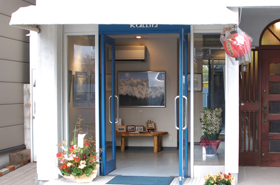
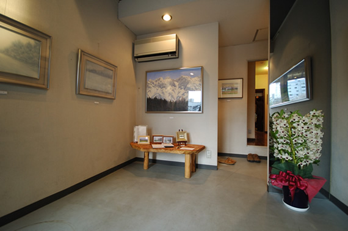
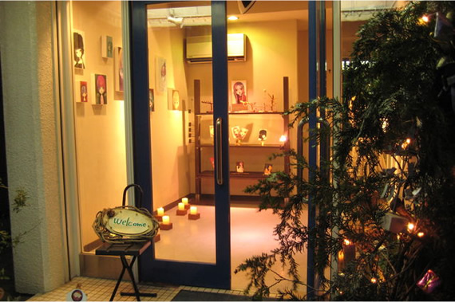
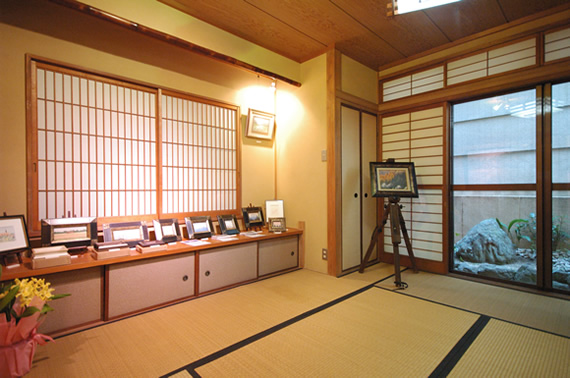
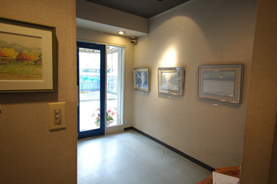
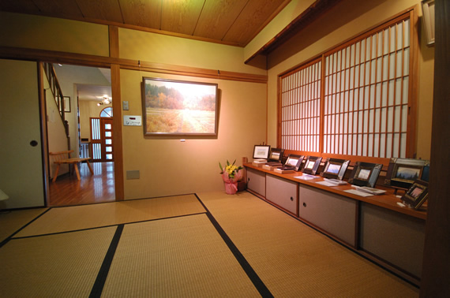
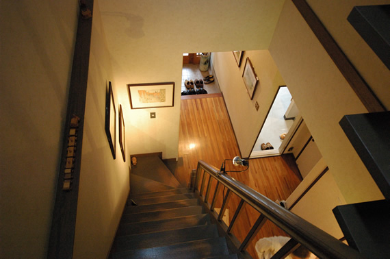
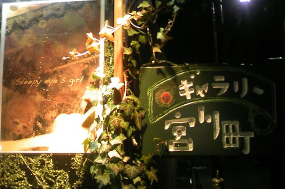
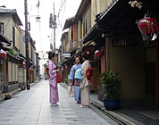
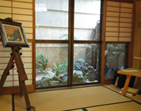

展示のご案内
２０１７年４月の作品展示会のご案内
★３月３１日（金）～４月２日（日） １３：００～１８：００
- ・パッチワークで紡ぐ‥・芸舞妓さんの姿に触れる～はんなりと
- 小野・南・佐藤の３人展の佐藤・南・小野
- ・舞鶴からの竹デザイン・・・舞妓の光を彫る
- 岩田宗一を囲む仲間たち
★★４月７日（金）～４月１０日（月） １１：００～１６：３０
- ・シャーリークレイ 春の作品展
- ２０１６年のクリスマス展示会に続く第２弾！
春らしい「かわいい」をクレイ作品にこめました。
ワークショップも充実♪♪ くわしくはブログをご覧下さい - http://ameblo.jp/favorite-motre-princesse/
★★★４月２７日（木）～４月３０日（日） １１：００～１８：００
- ・豊原香代子 作品展
- 宇宙空間との繋がりを布の世界で ””きらっ””””””
春展示に向け、KAYOKO 豊原は布に心を包む宇宙ピースを染め上げる デザインに心を通わしています。どうぞご期待下さい！！
京・ギャラリー宮川町について
- ◆小規模展示
- 多目的スペースとして使用可能。
絵画、陶芸、書、写真、工芸、衣装ファッション、雑貨などの個展や二人展などの作品発表・交流の場として、また、設計・デザイン・職人技や製品キャンペーンにも利用可能。
吹き抜け廊下部分を利用して、５ｍ長X１．２ｍ巾 内外の長尺物の展示も可能。
→ スペース・レイアウトはこちら
- ◆利便性
-
京都市街地ー四条河原町からも、京阪祇園四条駅、祇園南座からも徒歩で近く、
また交通連絡のとてもよい場所です。
- ◆環境と雰囲気
-
日本百名川で市内を南北に流れる鴨川沿い、宮川町筋に面したアートスペースです。この石畳の通りは、花街の一角で明治時代に建てられた「宮川町歌舞練場」があり、景観保存地区です。
お茶屋も数を残している界隈です。- 
- 